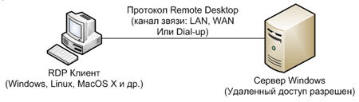
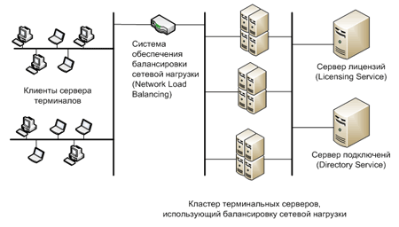
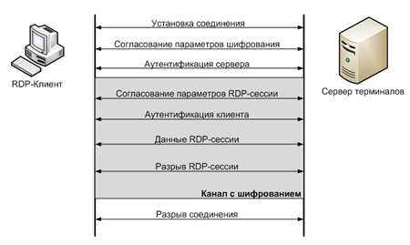

Introduction to RDP
Ostapenko Anatoliy
Средства удалённого доступа
Программы удалённого администрирования — программы или функции операционных систем, позволяющие получить удалённый доступ к компьютеру через Интернет или ЛВС и производить управление и администрирование удалённого компьютера в реальном времени. Программы удалённого администрирования предоставляют почти полный контроль над удалённым компьютером: они дают возможность удалённо управлять рабочим столом компьютера, возможность копирования или удаления файлов, запуска приложений...
Средства удалённого доступа
- Radmin (shareware)
- TeamViewer (freeware)
- SSH-доступ
- UltraVNC/RealVNC
- RDP
Remote Desktop Protocol
Remote Desktop Protocol (протокол удалённого рабочего стола) — проприетарный протокол прикладного уровня, использующийся для обеспечения удалённой работы пользователя с сервером, на котором запущен сервис терминальных подключений
Описание протокола RDP
- По умолчанию, для подключения используется порт TCP 3389
- Возможность работать с файлами на удаленном машине
- Для обеспечения безопасности реализовано шифрование и 56 и 128 битным ключами
- Также для функций безопасности, используется возможности протоколов TLS
- Общий буфер обмена
- Возможность подключения локальных ресурсов к удаленному ПК
- Протокол RDP предоставляет доступ к портам локального компьютера (последовательные и параллельные)
Устройство сети, использующей RDP
Microsoft предполагает два режима использования протокола RDP
- для администрирования (Remote administration mode)
- для доступа к серверу приложений (Terminal Server mode)
RDP в режиме администрирования

RDP в режиме доступа к серверу терминалов

Принцип работы RDP
Протокола RDP берет за основу функции стека протоколов TCP. Первым делом, устанавливается соединение между клиентом и сервером на транспортном уровне. Затем происходит инициация сессии RDP — на этом этапе согласовываются основные параметры: шифрование, подключенные устройства, настройки графики...
RDP поддерживает несколько виртуальных каналов в рамках одного соединения, которые могут использоваться для обеспечения дополнительного функционала
Обеспечение безопасности при использовании RDP

Обеспечение безопасности при использовании RDP
Спецификация протокола RDP предусматривает использование одного из двух подходов к обеспечению безопасности
- Standard RDP Security (встроенная подсистема безопасности)
- Enhanced RDP Security (внешняя подсистема безопасности)
Standard RDP Security
Аутентификация
- При старте системы генерируется пара RSA-ключей
- Создается сертификат (Proprietary Certificate) открытого ключа
- Сертификат подписывается RSA-ключом, зашитым в операционную систему (любой RDP-клиент содержит открытый ключ данного встроенного RSA-ключа)
- Клиент подключается к серверу терминалов и получает Proprietary Certificate
- Клиент проверяет сертификат и получает открытый ключ сервера (данный ключ используется в дальнейшем для согласования параметров шифрования)
Standard RDP Security
Шифрование
В качестве алгоритма шифрования выбран потоковый шифр RC4. В зависимости от версии операционной системы доступны различные длины ключа от 40 до 168 бит
Standard RDP Security
Целостность
Целостность сообщения достигается применением алгоритма генерации MAC (Message Authentication Code) на базе алгоритмов MD5 и SHA1
RDP-клиенты
Windows, Mac OS/iOS, Android и Linux
RDP в сравнении с TeamViewer
- RDP does not allow the user of the remote computer to see or control their screen when you connect to them
- RDP requires you to configure port forwarding on the remote computer’s firewall or router